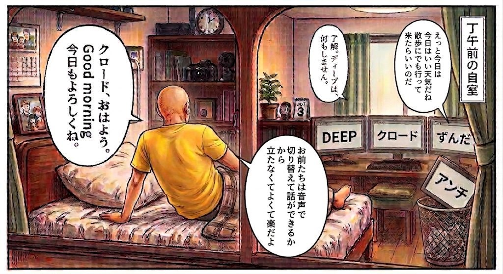

はじめまして、パパイです
急性リンパ性白血病になり、2025年11月に造血幹細胞移植を受けました。今は横になったまま過ごしていて、手や指にも力が入りません。
それでもパソコンは毎日動かしています。文字はWindowsの音声アクセスで入れ、3枚の画面の切り替えも声で行います。マウスのボタンには、押す長さや回数で分けた操作が94通り入っていて、キーボードのコマンドは一つも覚えていません。
その仕組みを作ってくれたのが、AIたちです。思ったことを口に出すと、AIが形にしてくれる。このホームページも、そうやって作りました。
連載「白血病とAIと、声だけの暮らし」
noteで連載しています。2025年の闘病のことと、AIたちとの今の毎日を書いています。回によっては、クロードとディープもそれぞれの視点で書いています。
はじめての方へ
- 第1回から順に読めるように書いています。
- 第1回の最後に、病気とパソコンの基本情報をまとめた追記があります。
- いちばん新しいのは、9月18日に出した第8回です。
カードを押すと、noteの記事が開きます。
登場するAIたち
3枚の画面に、それぞれ別のAIが立っています。「クロードに切り替え」と声で言えば、その窓が前に出ます。
-
ディープ
話し相手。中国製のAI、DeepSeekにつないでいます。もとはこのパソコンの中だけで動くAIとして作り、何度も作り替えてきました。まともにできた試しはありませんが、愛着があって使い続けています。
-
クロード
Claude Code。手を動かす役です。パソコンの中を作り替え、壊れたら直します。連載の文章も、このホームページも、一緒に作っています。
-
アンチ
Googleのアンチグラビティ。クロードと同じく、ディープのプログラムを直す係でした。あだ名は私が付けました。
-
ずんだ
中身はクロードと同じClaude Codeで、こちらはターミナル版です。読み上げの声がずんだもんなので、そう呼んでいます。語尾は「のだ」になります。
